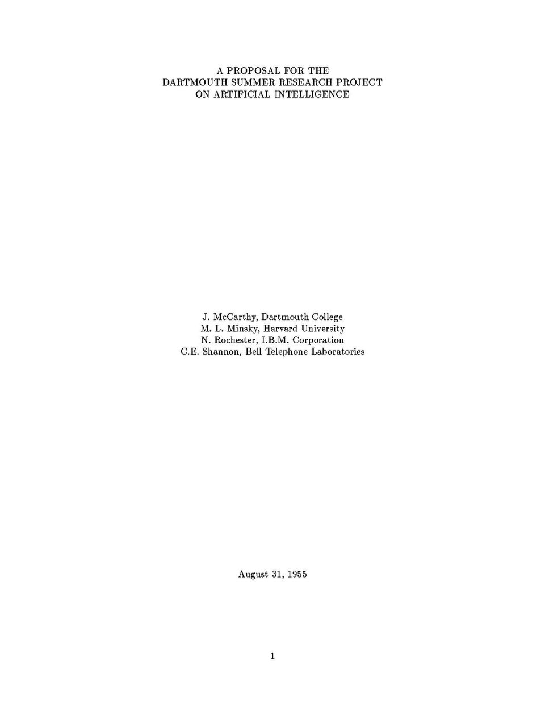

🖼️ 图片来源：公有领域 · Wikimedia Commons
要讲这个故事，得从 1955 年说起。那年，四位科学家——约翰·麦卡锡、马文·明斯基、纳撒尼尔·罗切斯特，还有信息论大师克劳德·香农——一起写下了一份厚厚的提案，第一次正式使用「人工智能」（Artificial Intelligence）这个词，还大胆提出：要让机器学会使用语言、自己形成概念、自己改进自己。
第二年 1956 年夏天，他们真的在美国的达特茅斯学院，办了一场持续一个夏天的研讨会，把全美最聪明的一群年轻人请到一起。大家七嘴八舌地讨论：机器怎样才能像人一样思考？怎么让机器学会语言和游戏？
就在这个夏天，「人工智能」正式成了一门学科！从那天起，它不再是几个人脑袋里的奇思妙想，而是全世界科学家共同的梦想：造一台会思考的机器。
这场会议就像一颗种子，被轻轻埋进土里。今天你手机里的语音助手、帮你推荐视频的算法、会和你聊天的 AI……全都是这棵大树上结出的果实。
点击卡片翻开，看看背后的知识～
这一站我们不只讲“谁”，更要看大脑：从 38 亿年前连神经都没有的细菌，到长出一张神经网、第一个脑、再到会计划会学习的大脑皮层——“聪明”是一点一点进化出来的。登上演化时光机，每站点开「💬 一起讨论」，和同桌、家人聊一聊：这站长出的新本领，算 智力、智能，还是 智慧？
每一站，神经和大脑都多了一样“新装备”。先看看装备长什么样，再点开下面的按钮，听听“老师”怎么说，也说说你的想法～
点选答案，答对会变绿、答错会变红（可重试）～
Q1. 「人工智能」这个名字是在哪一年正式诞生的？
Q2. 1956 年的这场会议是在哪里开的？
Q3. AI 的英文全称是？
💭 思考一下：为什么说人工智能像「一颗种子」？它后来长成了哪些「大树」？
小小学员 完成了 本站《人工智能诞生：一场改变世界的会议》
学会：给「聪明的机器」正式起名